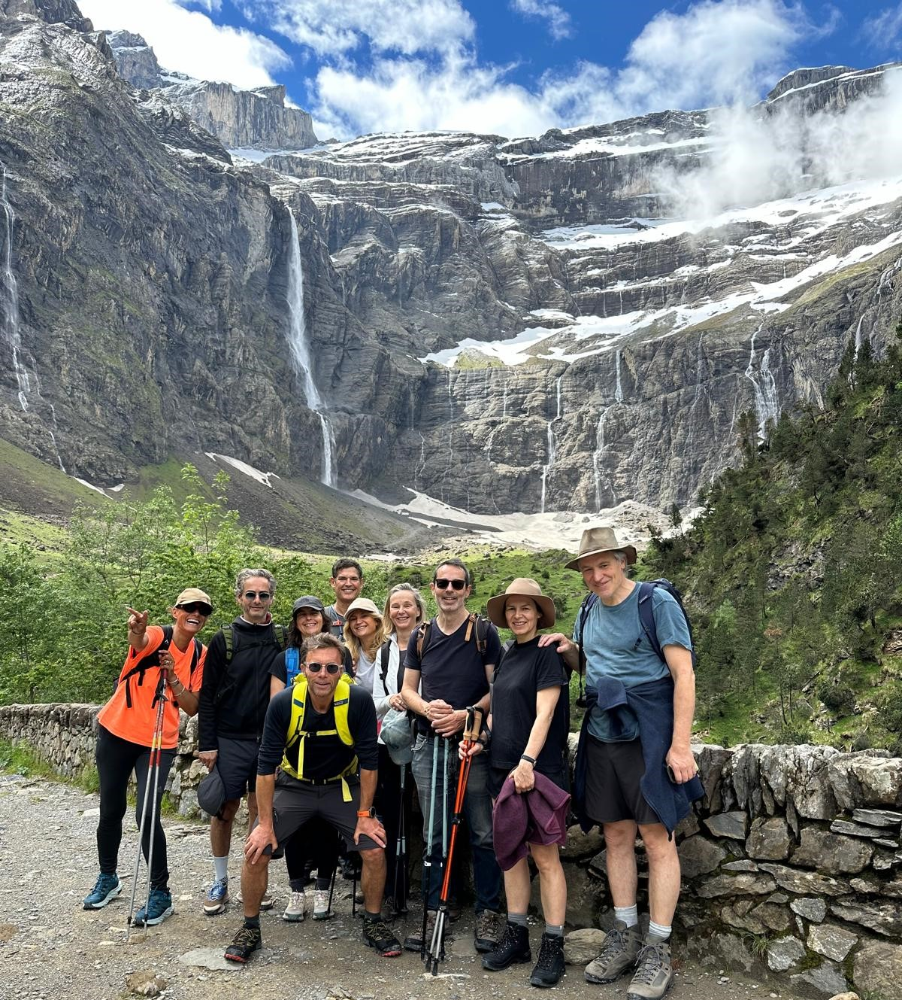

À pied
Randonnée à la journée ou itinérance. Niveaux et objectifs adaptés.
1/2 journée, journée, itinérance — à pied, en raquettes ou en vélo. Des sorties et séjours conçus sur-mesure pour vivre la montagne pleinement.
1) Élaborer un itinéraire, un carnet de voyage, un programme d’activités personnalisés selon vos préférences et vos objectifs.
2) Proposer des hébergements et des activités correspondant à vos critères : authenticité, durabilité, investissement dans des projets locaux (ex : conservation du patrimoine).
3) Partager mes meilleurs sentiers de randonnées, lieux à visiter, refuges, restaurants et adresses marquantes (faune / flore locale).
4) Offrir des conseils avant, pendant et après le voyage pour une expérience optimale et profitable pour le corps et l’esprit.
5) Trouver le meilleur équilibre environnemental / financier / qualité des prestations par rapport au cahier des charges initial.
Exemple vidéo : Massif des Vosges (à intégrer).
Randonnée à la journée ou itinérance. Niveaux et objectifs adaptés.

Sorties hivernales (selon conditions) — découverte et progression.
Balades et sorties sportives — itinéraires choisis avec soin.
Photos fournies (à ajuster / remplacer selon la section).
Décrivez votre envie (durée, niveau, saison, contraintes) et je vous propose un itinéraire adapté.